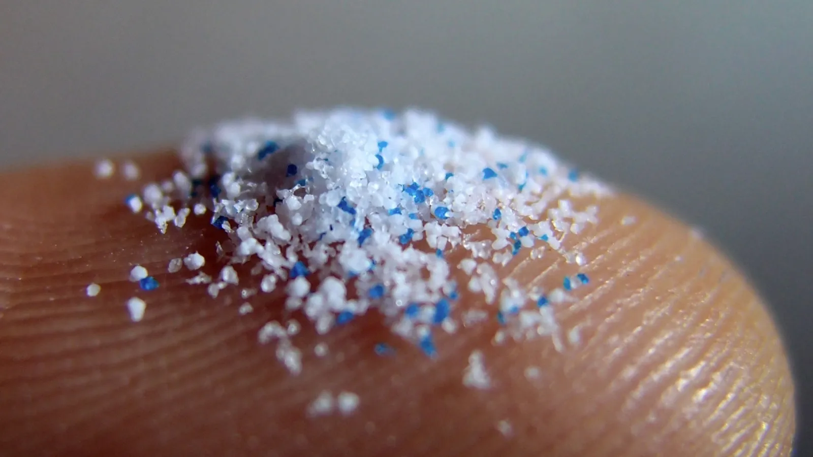
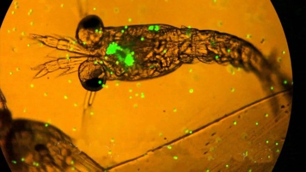
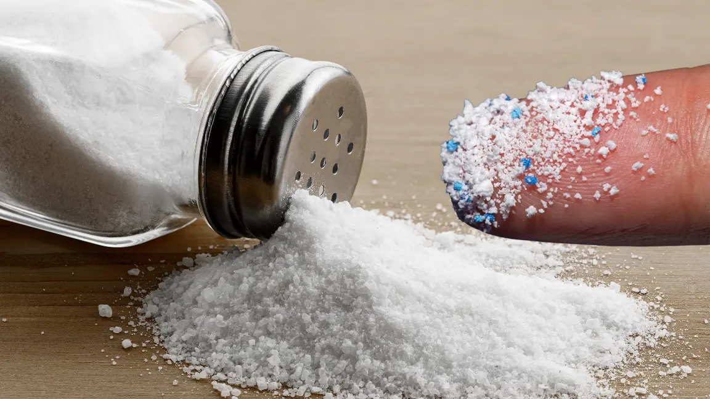
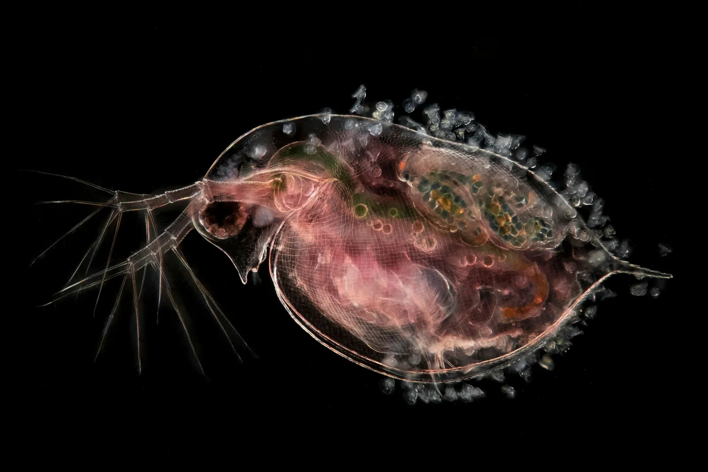
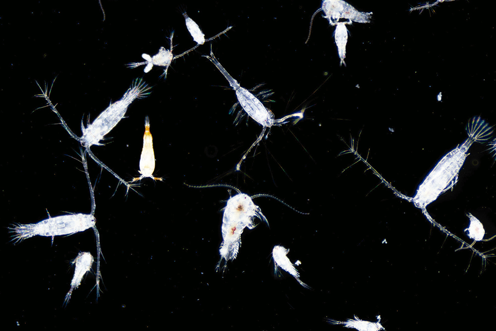

Microplasticos
Os microplásticos, como o próprio nome sugere, são fragmentos de plástico menores que 5 milímetros, quase imperceptíveis a olho nu. Sua presença no ambiente pode ocorrer de duas formas principais: a primeira é quando são produzidos intencionalmente em tamanho microscópico, como em produtos de higiene pessoal (esfoliantes, pastas de dente) e até em glitter utilizado em festas e eventos. A segunda e mais preocupante origem é a degradação de plásticos maiores, que, em vez de se decompor completamente, se fragmenta em partículas minúsculas que persistem no ecossistema por séculos.
Esses poluentes chegam ao meio ambiente de diversas maneiras: por meio do descarte inadequado de resíduos domésticos (como embalagens e sacolas plásticas), da atividade industrial, do comércio e até do transporte de mercadorias. Além disso, o desgaste de pneus de veículos e a lavagem de roupas sintéticas liberam microplásticos que acabam chegando aos rios e oceanos através da água da chuva e dos sistemas de esgoto.
O maior problema dos microplásticos é sua resistência e dificuldade de remoção do ambiente. Uma única partícula pode persistir por centenas ou até milhares de anos, acumulando-se no solo, na água e no ar. Além disso, essas partículas possuem alta capacidade de absorver substâncias tóxicas, como metais pesados (mercúrio, chumbo, cádmio) e compostos químicos perigosos, transformando-se em verdadeiras "bombas-relógio" de contaminação.
Quando presentes no solo, os microplásticos prejudicam a fertilidade da terra e a saúde das plantas, podendo até mesmo entrar na cadeia alimentar humana por meio de cultivos agrícolas. Nos oceanos, eles são ingeridos por organismos marinhos, desde plânctons até grandes peixes, causando obstruções digestivas, inflamações e até a morte de diversas espécies. Como consequência, esses poluentes acabam chegando ao prato do ser humano por meio do consumo de frutos do mar, água potável e até mesmo do sal marinho.

Fonte Disponível em: Olhar Digital

Fonte Disponível em: National Georgraphic
Essa contaminação não se limita à presença física dos resíduos: ela também afeta diretamente a vida marinha. Os microplásticos, além de servirem como veículo para poluentes e toxinas, são facilmente ingeridos pelos animais oceânicos, impactando a saúde dos ecossistemas de maneira física, química e biológica.
A detecção e remoção de microplásticos representam um enorme desafio tecnológico. Métodos tradicionais de filtragem são insuficientes para partículas tão pequenas, exigindo o desenvolvimento de novas abordagens, como o uso de materiais magnéticos ou sistemas biológicos de degradação. Paralelamente, a conscientização sobre o consumo responsável de plásticos e a implementação de políticas eficazes de gestão de resíduos são passos fundamentais para reduzir o fluxo contínuo desses poluentes para os oceanos.
Estudos recentes indicam que os microplásticos já atingiram as fossas oceânicas mais profundas, demonstrando a extensão global do problema.
Microplástico no Organismo Humano
Os microplásticos estão presentes em todos os níveis da cadeia alimentar marinha. Pequenos organismos, como o plâncton, ingerem essas partículas, que depois são consumidas por peixes, moluscos e crustáceos. Grandes predadores, como atuns e tubarões, acumulam quantidades ainda maiores em seus tecidos, num processo conhecido como bioacumulação. Quando consumimos frutos do mar, ingerimos indiretamente os microplásticos que estavam neles e estudos já encontraram essas partículas em mariscos, sal marinho e até em peixes vendidos em mercados.
O impacto sobre a vida marinha é alarmante. Organismos filtradores, como ostras e mexilhões, acumulam centenas de partículas em seus tecidos. Peixes de pequeno porte, incluindo espécies comercialmente importantes como sardinhas e camarão, ingerem microplásticos ao confundi-los com alimento. Pesquisas recentes revelam que até 90% do sal marinho comercializado contém essas partículas, evidenciando a abrangência do problema.
Apesar das pesquisas ainda estarem em fase inicial, evidências apontam que os aditivos químicos presentes nos plásticos podem desencadear uma série de complicações metabólicas. Os rins e o fígado, responsáveis pela filtragem de toxinas, são particularmente vulneráveis, pois acumulam essas partículas sem conseguir eliminá-las completamente.
Além disso, a presença constante desses materiais no organismo pode levar a processos inflamatórios crônicos e aumentar a suscetibilidade a infecções. Algumas hipóteses sugerem que a exposição prolongada pode estar relacionada ao surgimento de doenças autoimunes e distúrbios hormonais, embora sejam necessários mais estudos para confirmar essas correlações.

Fonte Disponível em: Brasil247

Fonte Disponível em: Vanguardia
A situação se agrava quando consideramos que uma pessoa pode ingerir até 100 mil partículas de microplásticos por ano apenas através da alimentação e da água. Com a poluição plástica aumentando exponencialmente, é urgente desenvolver estratégias para reduzir a exposição humana a esses contaminantes.
Enquanto a ciência busca compreender os reais impactos dos microplásticos na saúde humana, medidas preventivas devem ser priorizadas. Isso inclui melhorar os sistemas de filtragem de água, reduzir o uso de plásticos descartáveis e investir em pesquisas sobre materiais alternativos. A conscientização sobre esse problema invisível é o primeiro passo para proteger as gerações atuais e futuras de suas consequências ainda desconhecidas.
Microplásticos e a Cadeia Alimentar Microscópica: Um Risco Invisível
Os microplásticos têm se infiltrado nos ecossistemas marinhos de forma tão intensa que até os menores seres vivos estão sendo afetados.
Estudos recentes mostram que animais microscópicos, essenciais para a cadeia alimentar aquática, estão consumindo microplásticos de maneira involuntária. O zooplâncton, por exemplo, que serve de alimento para peixes pequenos, confunde fragmentos plásticos com algas e outros nutrientes. Uma pesquisa realizada em laboratório demonstrou que, em ambientes com alta concentração de microplásticos, até 80% dos organismos microscópicos analisados apresentavam partículas plásticas em seus sistemas digestivos.
Essa contaminação inicial tem efeitos em cascata. Quando peixes pequenos se alimentam de zooplâncton contaminado, acumulam não apenas plástico, mas também os produtos químicos tóxicos associados a ele, como corantes e estabilizantes. Com o tempo, esses poluentes se concentram ainda mais em predadores maiores, como atuns e tubarões, que são consumidos por humanos.

Fonte Disponível em: National Geographic

Fonte Disponível em: CHC
A ingestão de microplásticos por organismos microscópicos pode prejudicar seu desenvolvimento e reprodução. Algumas espécies de protozoários apresentaram redução na capacidade de se reproduzir quando expostas a altas concentrações de plástico, o que poderia desequilibrar ecossistemas inteiros.
Videos Relacionados a Leitura
O Que é o microplástico?
Microplástico
O perigo invisível do plástico
O perigo invisível do plástico que a ciência acabou de descobrir